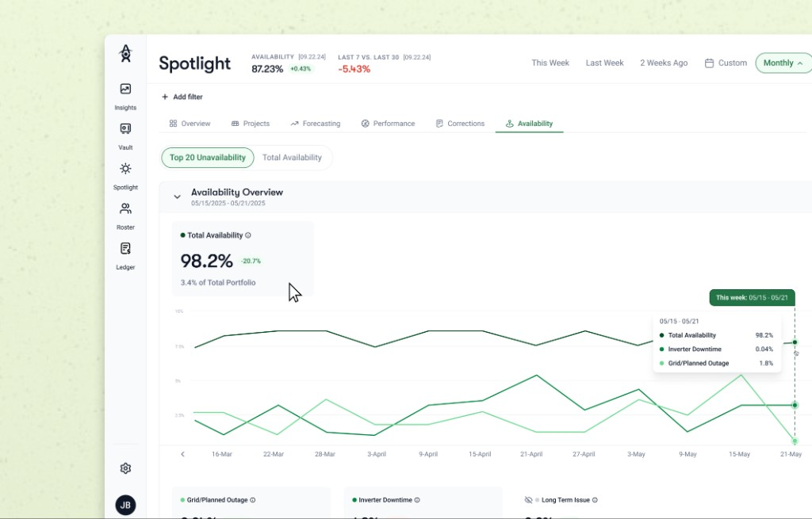

Altus Power · 2025
Availability dashboard
Transforming analytical static Excel reports into a digital dashboard experience — making solar asset availability legible for operations and leadership.

Context
Altus Power is a clean energy company that provides reliable and effortless transition into renewable energy for households and businesses worldwide.
I designed the Availability Dashboard for Altus Power’s core internal tool, Altus Central, transforming weekly Availability Reports managed by multiple internal teams — from Excel sheets to a digital dashboard.
Problem
Internal teams felt managing reports was outdated and disorganized — the weekly loop lived in scattered files instead of one trustworthy surface.
- Modern Eliminate manual processes to promote efficiency in analysis
- Consolidated Increase organization through consolidation of all reports and management
Insights
Stakeholders · PM · engineering · senior design · Power BI · Excel source files
- One location → many observations / issues
- Some sites: site-specific & issue-specific rules
Solutions
The dashboard had been explored by another designer — the work included a single screen, fly-out, and table. I extended that foundation into a coherent flow for Altus Central.

For detailed key features, contact me at maryyyliu (at) gmail (dot) com — happy to dive deeper into process for this project.
Reflection
The dashboard will transfer over 50% of the internal team to a digital dashboard on the main internal tool.
The project was an incredibly rewarding experience collaborating within a design team, while allowing me to better understand who I am as a designer & the products I want to build.
- Finding a balance between form and function
- Technical constraints are breeding grounds for ideas
- Pixel perfection is the enemy of production